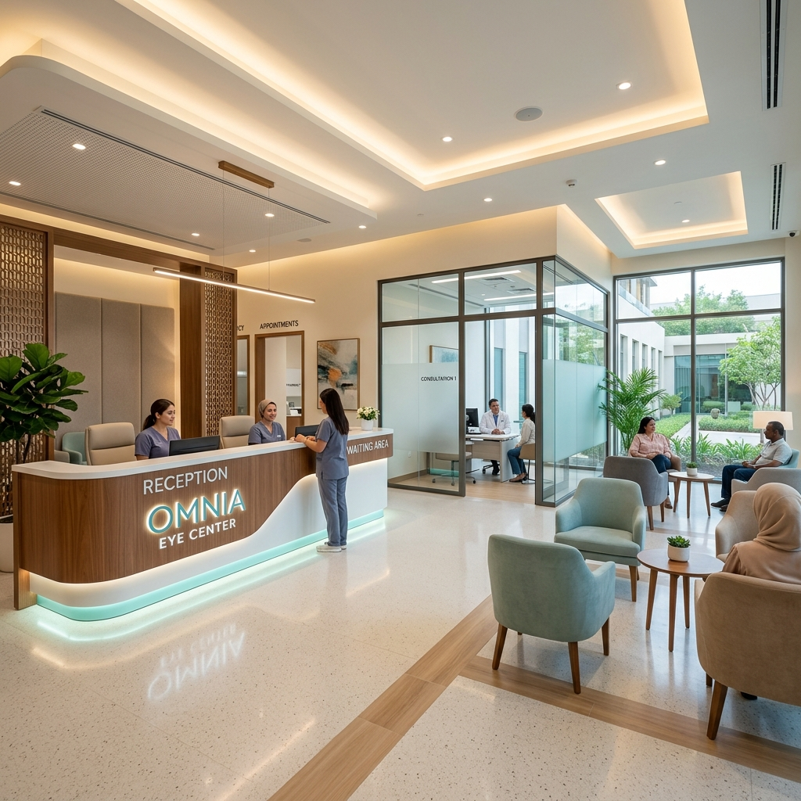
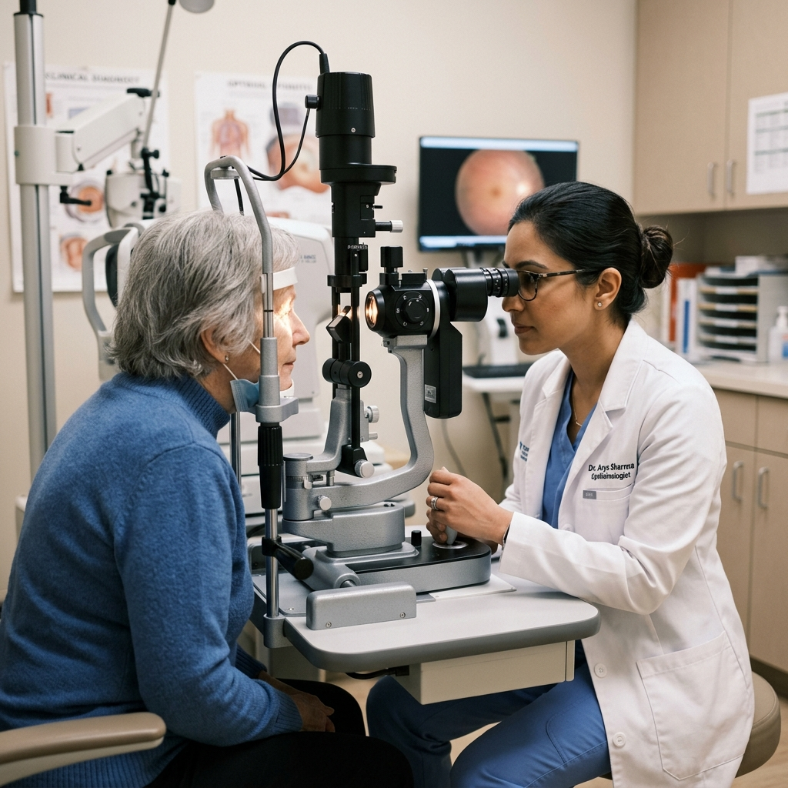
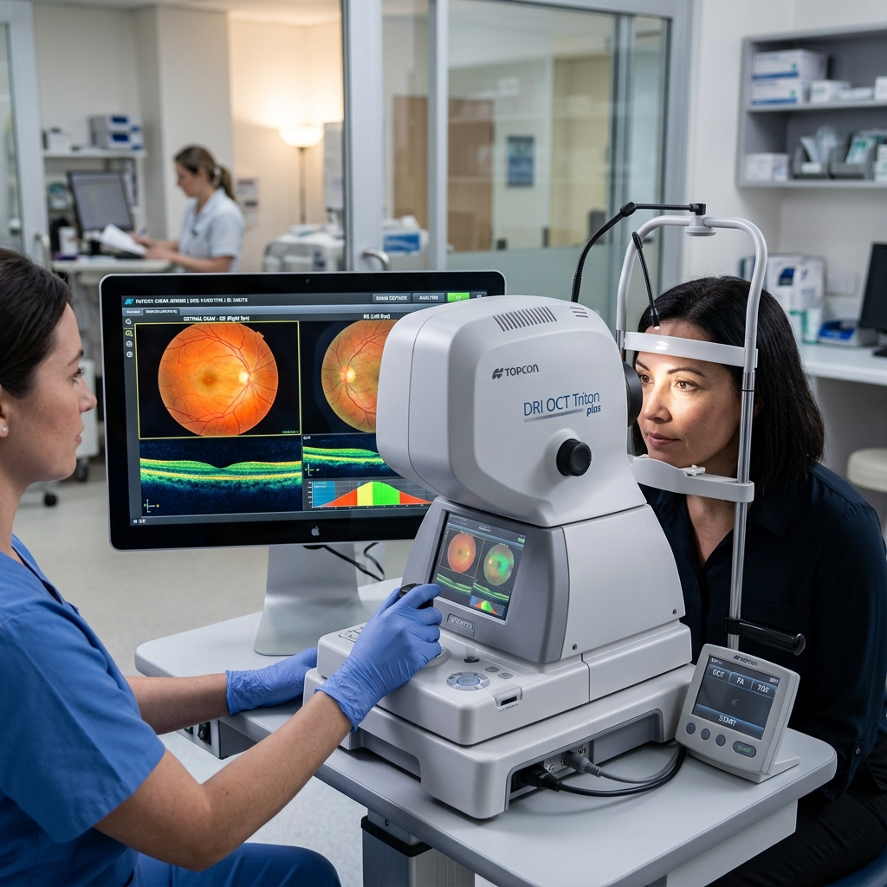

24/7 Eye Emergency
Call: 73773 16366
100% Cashless
For BSKY & PM-JAY Cardholders
Chandanpur's leading eye care center providing state-of-the-art diagnostics, premium micro-incision cataract surgeries, and comprehensive treatments with compassion.

Call: 73773 16366
For BSKY & PM-JAY Cardholders
Mon - Sat: 9:00 AM - 6:00 PM | Sun: 9:00 AM - 1:00 PM
Plot No-104, Medical Chhaka, Chandanpur, Puri
Expert Ophthalmologists & Surgeons

Located in Chandanpur, Puri, Odisha, **Tribeni Eye Hospital and Charitable Institute** is a modern eye healthcare center committed to eliminating preventable blindness. We blend private medical expertise with charitable outreach, ensuring that premium eye treatments are accessible to everyone, regardless of economic background.
As an empanelled hospital under national and state health policies, we offer completely cashless treatments for underprivileged families. Our clinical team operates with state-of-the-art optical diagnostic tools and surgical setups to ensure safe, rapid, and painless recovery.
Hospital Administration
We offer a full spectrum of diagnostic and surgical ophthalmology services using premium clinical technology.
Advanced stitchless, painless phacoemulsification surgery with premium foldable intraocular lens (IOL) implants for crystal-clear vision.
Early screening, intraocular pressure measurement, and customized medical therapy to halt irreversible optic nerve damage.
Precise computerized eye tests and a wide collection of stylish prescription frames, high-index lenses, and custom contact lenses.
Advanced screening for diabetic retinopathy, age-related macular degeneration (ARMD), and vitreous floaters using fundus scanners.
Specialized vision screening, lazy eye (amblyopia) management, and corrective treatments tailored for children.
Fully stocked in-house pharmacy providing authentic ophthalmic drops, eye drops, ointments, and immediate care for eye traumas.
Our commitment to clear vision means we continuously upgrade our medical arsenal. By utilizing digital topography, fundus imaging, and high-frequency ultrasound phaco emulsifiers, we offer surgeries that are highly precise and require zero overnight stay.
Instant, computerized calculation of exact prescription values for refractive correction.
Ultrasonic surgical technology allowing cataract extraction with a micro incision of less than 2.8mm.
High-magnification microscopic examination of the anterior structure of the eye.

Education is the first step to healthy vision. Watch this short animated guide to understand how your eyes work and the importance of regular clinical eye examinations.
Take a visual tour of our diagnostics labs, optical showroom, patient care wards, and operating theater.
Read feedback from residents of Chandanpur, Puri, and neighboring blocks who restored their vision with us.
"My grandmother had a dense cataract in both eyes. We came to Tribeni Eye Hospital and availed of the BSKY scheme. The surgery was completely cashless, fast, and painless. The staff is extremely well-behaved and the doctors are experts. Excellent service in Chandanpur!"
Puri Town (Grandson of Patient)
"ଭଗବାନଙ୍କୁ କୋଟି କୋଟି ପ୍ରଣାମ ଓ ତ୍ରିବେଣୀ ଆଖି ହସ୍ପିଟାଲର ଡାକ୍ତରବାବୁ ମାନଙ୍କୁ ଧନ୍ୟବାଦ। ମୋର ମୋତିଆବିନ୍ଦୁ ଅପରେସନ ସଫଳ ହେଲା। ମୁଁ ଏବେ ସବୁ କିଛି ବହୁତ ସ୍ପଷ୍ଟ ଦେଖିପାରୁଛି। (Highly recommend this eye hospital for anyone looking for cataract surgery in Puri)."
Chandanpur, Puri
"Very professional eye testing facility. Got my computerized eye test done and purchased blue-cut glasses from their optical shop. Price is highly reasonable and quality is superior to city showrooms. Staff behaves politely."
Sakhigopal, Puri
We are conveniently located at Medical Chhaka, Chandanpur on the main Puri-Bhubaneswar highway. Feel free to call us for details on appointment booking, emergency support, or health scheme card eligibility.
+91 79786 36375
+91 73773 16366
Plot No-104, Medical Chhaka, Chandanpur, Puri, Odisha (Pin: 752012)
fb.com/Tribeni-Eye-Hospital
Fill out the form below and our care desk will contact you within 24 hours to schedule your eye checkup.